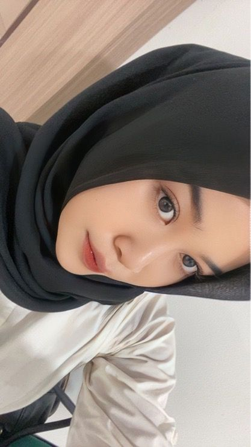

Kartika Sari
Mahasiswa Inkes Deli Husada
About Me
Halo. Saya Kartika Sari. Saya adalah seorang Mahasiswa Inkes Deli Husada dengan pengalaman pernah magang ke Jerman. di sana saya sangat menikmati keseharian saya di Jerman banyak pengalaman yang saya dapatkan disana.
dan ternyata makanan disana sangat jauh berbeda dengan makanan indonesia tapi untungnya disana ada toko asia jadi ketika kita mau makan atau masak makanan indonesia bisa beli di toko asia.
Bio
Age
39
Email
kartikasari13x@gmail.com
Skype
kartikasari13x@gmail.com
Phone
+62 852-9772-7923
Address
Deli Serdang - Sumatera Utara